家乡的解放
小组成员及分工
任杰，钱逸 ：资料收集及整理
曾思颖，陈芳暄 ：胜利原因和影响分析
郭翀 ：flowtime展示制作
金冰涵，何文欣 ：成果展示
一.贵州的解放
1．背景和解放准备
- 1949年4月党中央、毛主席对全军发出了向全国进军的命令
此时，国民党反动派已日薄西山，气息奄奄。但蒋介石仍不甘心。妄图依仗他 仅有的白崇禧、胡宗南两个主力集团，及其在西南地区的地方势力负隅顽抗. - 十六军、十七军隐蔽地向湘西集结
- 十八军配合四野进行湘赣边作战
- 第四野战军正在湖南准备同白崇禧会战
解放军出征
解放军出征
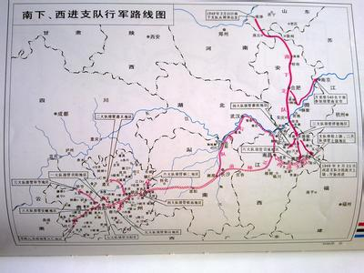
2. 解放贵阳
- 10月1日，传来了中华人民共和国成立的特大喜讯，广大指战员激动万分，奔走相告
虽然当地天气炎热，行军作战极为艰苦，全体指战员都信心百倍，劲头十足， 决心全歼蒋介石残存军队再立新功. - 根据军委10月3日命令，第二野战军前委令五兵团归四野指挥，发起衡宝战役
- 贵阳城解放
刘、邓首长于11月21日及时向国民党西南军政人员发出4项忠告：“贵阳已为 我军占领，国民党的所谓最后战略体系，已被我拦腰打断”。
解放贵州从这里拉开序幕
解放军贵州剿匪
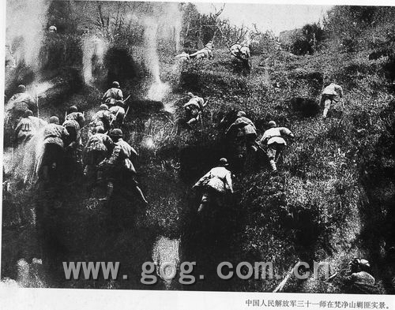
贵阳解放
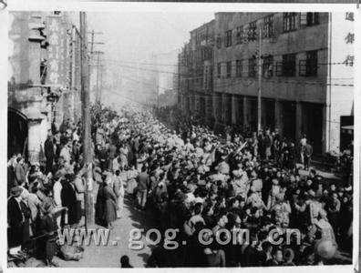
庆祝贵阳解放
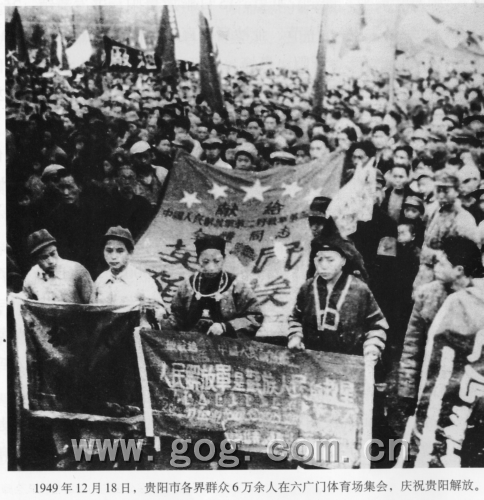
解放后的贵州省政府
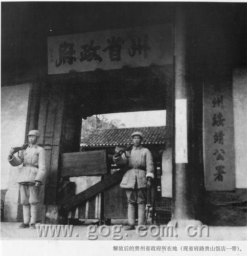
3．解放后期
各部队按上述要求，认真改进追击战术。接连解放黔西、大定，于大定俘敌四十九军参谋长 饶启光。28日解放黔西北重镇毕节，截断了川滇公路.
至11月底，除黔西南外，贵州大部地区宣告解放.
重要人物~
唐成海 (贵州省军区副司令员)
张星炳 (贵州省军区副政委)
二.浙江的解放
精彩瞬间
- 围歼逃敌
- 解放三门
- 敌台易帜
- 浙南肃敌
- 血战登步
解放温州
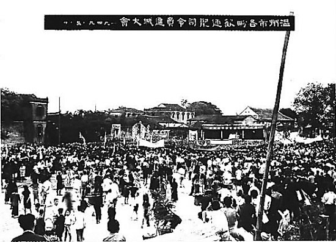
舟山解放
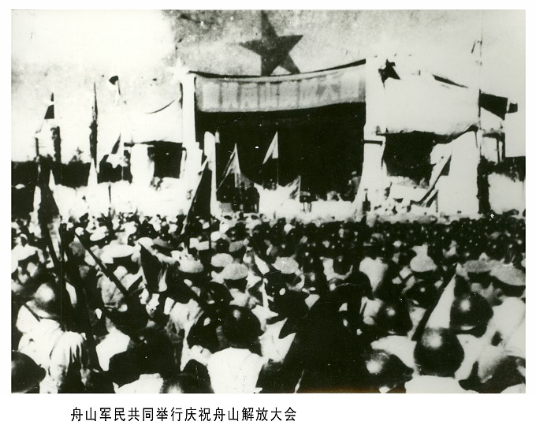
中华人民共和国成立，杭州人民庆祝
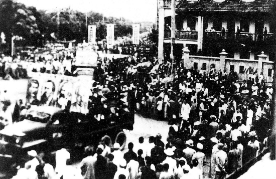
解放军进入杭州市民欢迎
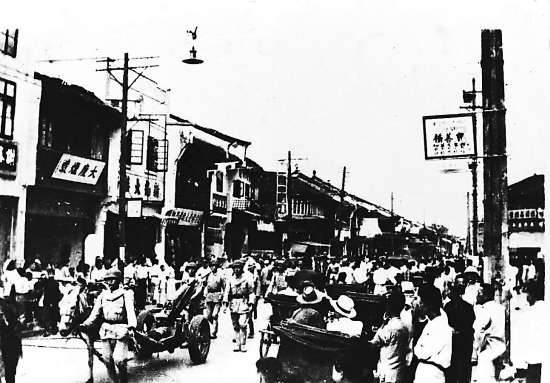
人民庆祝浙江解放
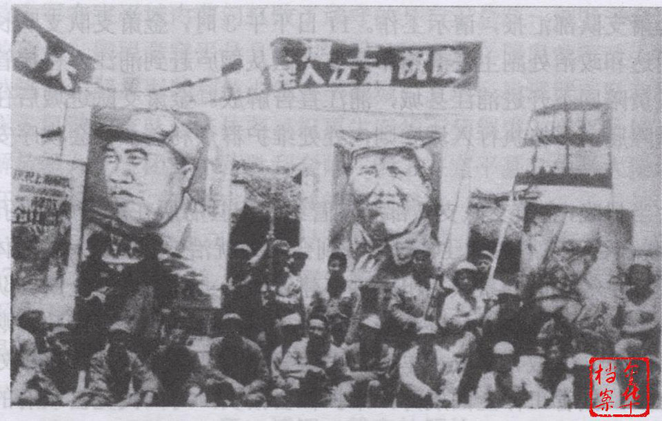
解放浙江经过图
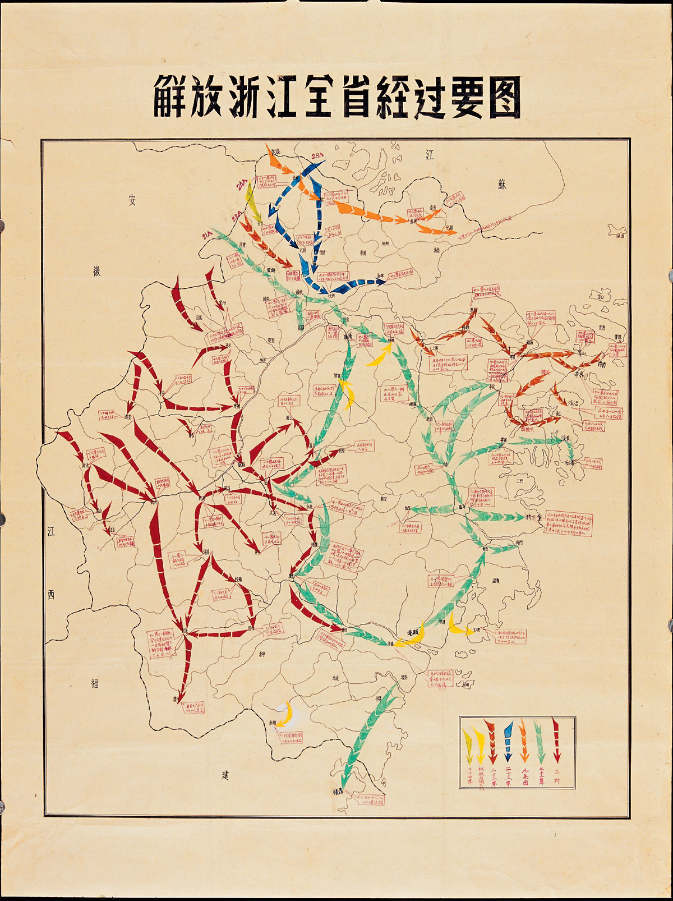
三.解放原因分析
浙江的解放
- 国民党政权的腐败及不符时政要求
- 兵力差距
- 渡江战役
- 地理位置
- 大势所趋
贵州的解放
- 解放军攻坚速度极快
- 群众的力量
- 五兵团的合作
- 封建剥削制度的落后
- 大势所趋
不管咋说 都是 大势所趋！ 2333
四.影响及意义
浙江方面
- 长兴钳战
- 定海战役
- 三门的解放
贵州方面
- 直接说吧2333
谢谢观看~~ =w=
Made by Armour